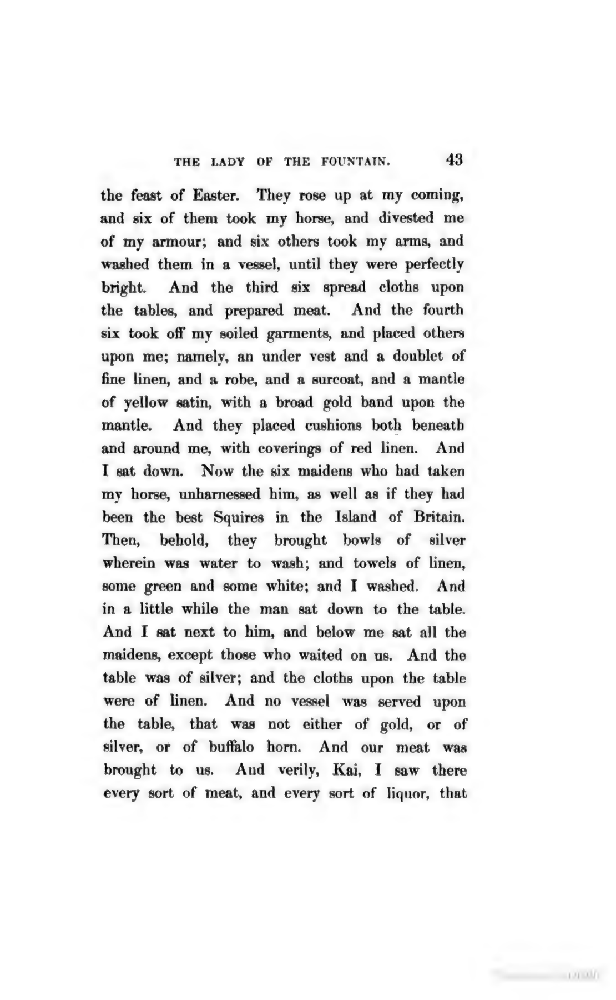
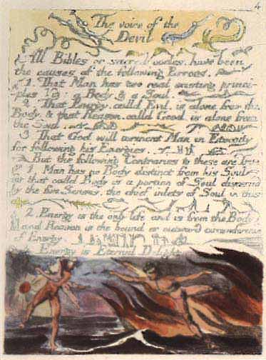

Historical book codes: exact texts and counting rules
Compare Mabinogion post order, Blake plate lines, Liber AL verses, Britannica and Emerson, with explicit replay status.
On this page
A book-code coordinate works only with a specified copy and counting rule. For example, 3:5 could mean the fifth character of the third decoded Reddit post title, or the fifth character on the third physical line of an article. The numbers look alike; the inputs are different. This guide compares five historical Cicada lookups, shows which source text each requires, and distinguishes local replays from steps known only through archived accounts.
The coordinates do not all mean the same thing
| Puzzle | Lookup unit | Critical detail | Liberpedia status |
|---|---|---|---|
| 2012 Mabinogion | Decoded post line : character | Post order, repeated titles and spacing | 76 lookups replayed on the pinned archive; historical provenance limits below |
| 2012 Britannica | Physical text line : character | CICADA heading is line zero; spaces count | All lookups replayed |
| 2012 Blake second chance | Plate-layout line : character | The Voice of the Devil layout | All 22 lookups replayed; fine image punctuation not certified |
| 2013 Liber AL | Chapter : numbered verse : character | Remove spaces/newlines; preserve punctuation | 44 lookups and two literals replayed on the pinned working copy |
| 2014 Emerson | Paragraph : sentence : word : letter | Referenced PDF and disclosed extraction rules | Complete historical control |
2012: the Mabinogion was also a Reddit ordering problem
The puzzle’s working text was decoded from post titles. Substituting a convenient edition of The Lady of the Fountain can change the lines before any character is selected. The contemporary ClevCode account describes using posting order, resetting the shift key on each line, and advancing it only on letters. It also records a spacing adjustment after periods to repair displaced book-code lookups. Preserve that adjustment as a separate transformation rather than quietly editing the source.
The archived reconstruction script sorts records by creation time, handles image posts separately and suppresses repeated titles. Its anomaly log records repeated and later posts. That is evidence that copying the current visible listing is not a sufficient reconstruction procedure. It does not establish which “fourth post” a reader encountered or justify an arbitrary reorder.
Reproduced: why the third and fourth lines change places
Our fresh replay ledger starts from 192 archived post records. It compares two declared selection rules: keep the earliest occurrence of each title across all authors, or first retain only posts whose author field is CageThrottleUs. Both sort by creation timestamp, with post ID as a tie-breaker, exclude JPEG/PNG image URLs, strip only outer title whitespace and suppress duplicate working titles. They retain 186 and 185 text lines respectively; the opening payload uses the first 76.
| Rule | Line 3 | Line 4 | Opening extraction |
|---|---|---|---|
| Earliest copy, any author | o4e2a · anonymous copy | o4efi · named account | CAMT US… |
| Named account only | o4efi · named account | o4eu9 · later named copy | CALL US… |
The anonymous o4e2a and later named o4eu9 posts contain the same working title. Keeping the former inserts that text before o4efi. No manual line swap is needed for the named-account rule. Coordinates 3:5 and 4:20 select M and T in the first ordering, and L and L in the second. This explains this archive’s discrepancy without guessing which post a current reader called “number four.”
Decode and inspect every lookup
The title string a2e7j6ic78h0j7eiejd0120 gives the numeric key by interpreting digits normally and a–j as 10–19. Subtract successive key values modulo 26 from ASCII letters, repeat the key as needed, and restart it at each title. Punctuation does not advance the key. This replay uppercases letters but retains internal spacing and punctuation exactly as archived. Row and character coordinates both start at one.
Under the named-account rule, all 76 coordinates extract CALL US AT US TELE PHONE NUMBER TWO ONE FOUR THREE NINE OH NINE SIX OH EIGHT. The ledger retains every input title, timestamp, selection decision, decoded line and lookup. The comparison was exploratory, prompted by the ordering complaint; the author filter is not cryptographic authentication. It reproduces the archived text, not a freshly retrieved 2012 Reddit page.
Why are there more post lines than lookups?
The final selected title precedes the separately preserved Valēte post and JPEG by five hours and 25 minutes. That post gives the stream a public endpoint; it does not explain why the story continued after the 76 book-code coordinates.
The preserved snapshot has 192 post records. After the stated image and duplicate filters, it yields 186 text lines under the all-author rule or 185 under the named-account rule. The 76 coordinates range from line 1 to line 76; this particular lookup never reads the remaining 110 or 109 selected lines. A separately copied 183-line text may reflect different selection or snapshot rules and should be compared line by line before use.
The posting schedule supplies more context than the first extraction alone. The timeline below uses the named-account replay’s line numbers and UTC timestamps. Each post link opens the surviving Reddit record, so the key endpoints can also be checked without relying only on the saved archive.
| Event | UTC | Why it matters |
|---|---|---|
| Story line 65 | 6 Jan, 07:11:54 | Last line before the long pause. |
| Story line 66 | 7 Jan, 06:03:16 | Posting resumes after 22 hours 51 minutes. |
| Story line 76 | 9 Jan, 18:13:25 | Last line needed by the opening JPEG’s book code. |
| Story line 77 | 10 Jan, 00:00:54 | The same excerpt continues after the lookup limit. |
| Story line 185 | 6 Feb, 18:02:15 | Last selected story title; it ends mid-sentence. |
| Valēte! | 6 Feb, 23:27:05 | A separate closing post, 5 hours 24 minutes later. |
At the pause after line 65, 11 of the 76 already supplied coordinate rows still lacked their post lines. A later verified signed clue asks how many lines of the code remained when the Mabinogion paused. The answer 76 − 65 = 11 is part of the route to Britannica’s 11th edition.
Posts kept arriving after line 76: 107 of the 109 intervals across that continuation fall between five and seven hours, with a median of six hours. This is corroborated outside the archive by Gary’s 2016 reconstruction from Reddit data. A solver writing during the puzzle also observed the roughly six-hour cadence and expected further text. The story did not stop at a textual endpoint. Its stopping shortly before the closing post is a plausible inference about scheduling, but neither source documents why the authors chose to post 109 lines beyond the phone-number lookup.
The extra lines continue the same literary excerpt. A word-by-word comparison of all 185 selected decoded titles against Project Gutenberg ebook 5160 matches all 2,430 words, ignoring case, spaces and punctuation. The stored ebook says it was updated in 2021, so this checks the text family, not the exact file available in 2012. Download the compared source text and comparison script; after extracting the reference-data bundle, run python scripts/compare_2012_mabinogion_source.py.
The lineation is separate from that word match. In both saved selection rules, decoded post line 76 ends AND I and line 77 continues SAT NEXT TO HIM. In printed page 43 of Guest’s 1849 edition, volume 1, And I sat next to him appears on one printed line; the current Gutenberg text also wraps lines differently from the Reddit titles. The break between posts is not a page break or even a printed line break in that edition. This supports a single continuous source passage, but does not establish which edition or file the authors copied, or why they posted beyond line 76. For the book-code replay, use the titles’ line breaks, spaces and punctuation: a reflowed source does not supply their character positions.


We also host the ebook landing-page HTML captured on 22 October 2026 and the exact plain text used in the comparison. The landing page is a later source snapshot, not evidence of its appearance in 2012. The historical scan is linked from its original viewer as well.
The posts are separate from the opening JPEG, so their number cannot increase that image’s file size for the later prime-dimension calculation. To test a proposed use for the remaining lines, fix the post selection and order first, then state the extraction rule and a checkable expected result.
No extra space was inserted after a period in this replay. The contemporary account’s spacing repair remains a separate historical observation: archive agreement does not prove its bytes are identical to that solver’s original copy. Preserve both facts rather than declaring either source universally correct.
The preserved double spaces can change a lookup. In the named-account trace, line 58 reads FOUR-AND-TWENTY DAMSELS, EMBROIDERING SATIN AT A WINDOW. AND THIS I. Coordinate 58:64 selects H; collapsing the two spaces after the period selects I instead. The ledger keeps the original line and selected character, so this is directly checkable.
Extract the reference-data ZIP, then run python scripts/replay_2012_subreddit.py --output subreddit-replay.json with Python 3. The script checks source hashes, inverse letter shifts and coordinate selection, and preserves both outcomes. Replay script · Archived post records · Source manifest. The opening coordinates come from the freshly extracted JPEG payload.
2012: Blake’s plate layout is part of the key
The second-chance clue points to The Marriage of Heaven and Hell. The community wiki account identifies the work and reports the resulting onion address. The artifact archive makes the practical dependency clearer: format The Voice of the Devil as lines on the referenced full plate. It supplies a formatted text file and lookup script.
A modern paragraph transcription can preserve every word yet fail the coordinates. The useful comparison is plate image → explicitly numbered lines → selected characters. The archive reports cginiziglyaobyph.onion; that is a historical output, not a link or a newly verified service. The independent trace below checks every lookup. The plate’s broad line layout has been compared visually, but its faint punctuation still limits a character-by-character image audit.
Reproduce the second-chance lookup

Start line 1 at All Bibles, beneath the heading. Count lines and characters from one. Spaces, punctuation and the numbered-list labels all occupy positions. Preserve the split princi- / ples across lines 3 and 4. Do not reflow the text into paragraphs or remove the line-ending hyphen.
For coordinate 1:22, All Bibles or sacred occupies the first 21 positions; the next character, c, begins the output. Coordinate 4:26 selects the period ending line 4. That period becomes the dot before the onion suffix. The downloadable trace shows the text before and after every selected character.
Show the 18 numbered working lines
| Line | Exact working text |
|---|---|
| 1 | All Bibles or sacred codes, have been |
| 2 | the causes of the following Errors. |
| 3 | 1. That Man has two real existing princi- |
| 4 | ples Viz: a Body & a Soul. |
| 5 | 2. That Energy, call'd Evil, is alone from the |
| 6 | Body, & that Reason, call'd Good, is alone from |
| 7 | the Soul. |
| 8 | 3. That God will torment Man in Eternity |
| 9 | for following his Energies. |
| 10 | But the following Contraries to these are True. |
| 11 | 1. Man has no Body distinct from his Soul; |
| 12 | for that call'd Body is a portion of Soul discern'd |
| 13 | by the five Senses, the chief inlets of Soul in this |
| 14 | age. |
| 15 | 2. Energy is the only life and is from the Body |
| 16 | and Reason is the bound or outward circumference |
| 17 | of Energy. |
| 18 | 3. Energy is Eternal Delight. |
All 22 coordinates produce cginiziglyaobyph.onion. This is the historical output, not a currently verified destination. Download the full lookup trace, working text, source manifest and script. Extract the reference-data bundle, then run python scripts/replay_2012_blake.py --check.
The image comparison supports the line arrangement, including the split word; this small reproduction cannot certify every punctuation mark. The successful text-file replay is narrower evidence than proving a perfect transcription of the original plate. The script uses the previously extracted second-chance image payload; it does not repeat extraction or signature verification.
2013: numbered verses, not screen lines
Start with the original opening JPEG and freshly extracted signed riddle. The community walkthrough identifies Crowley’s Liber AL vel Legis and explains that spaces are omitted while punctuation matters. The archived reconstruction specifies chapter and numbered-verse parsing, removing the verse labels, spaces and newlines before character selection. Browser wrapping is not the verse boundary.

Retain two outputs: the raw extraction, containing dashes in URL separator positions, and the interpreted URL with those dashes replaced by slashes. They are different stages. A missing first character should trigger comparison of the verse label, leading text and indexing origin; it is not a reason to move every coordinate until a plausible URL appears. The independent replay below now checks every coordinate against a pinned archived working copy.
Reproduce all 46 output characters
The preserved chapter files contain 66, 79 and 75 numbered verses. Our script checks that verse numbers are consecutive, removes the numbering, then removes ASCII spaces and LF newlines. It preserves punctuation, capitalization and all other characters. Both verse and character positions begin at one. It also compares two parsing methods to ensure that a number inside a verse has not silently split the text.
For example, verse I:1 is Had! The manifestation of Nuit.. Its working text begins Had!The: positions 1 through 7 are H, a, d, !, T, h, e. Therefore I:1:6 selects h. Removing the exclamation mark would change that lookup. Keeping the verse label would also change the positions. This is why a similar-looking copy can lose the first letter of the address.
| Output position | Instruction | Selected character |
|---|---|---|
| 1 | I:1:6 | h |
| 2 | I:2:15 | t |
| 3 | I:3:26 | t |
| 4 | I:5:4 | p |
| 5 | I:6:15 | s |
| 6 | I:10:26 | : |
| 7 | I:14:136 | - |
| 8 | I:15:68 | - |
The complete extraction is https:--www.dropbox.com-s-r7sgeb5dtmzj14s-3301. There are 44 chapter/verse/character lookups and two literal digits. Replacing the extracted dashes with slashes is a separate interpretation, recorded alongside the raw result. No historical service was contacted.
Download the full character-by-character trace, source manifest or replay script. The trace includes the original and processed verse for each lookup. Extract the reference-data bundle and run python scripts/replay_2013_liber_al.py --check; omit --check to print the report. Python 3 is sufficient.
This confirms the counting rule for these archived bytes. It does not identify the original solver’s exact edition, freshly extract the opening JPEG, or verify the archived message’s PGP signature. Those are separate provenance checks, not consequences of obtaining a readable address.
What every downloadable replay should contain
- The exact source file, its hash and provenance, plus the source image or edition where applicable.
- The unmodified coordinate list, with literal digits distinguished from lookups.
- All preprocessing rules in order, including removed characters, retained punctuation and reset boundaries.
- A row for every lookup: coordinate, selected source unit, character position and raw output.
- The raw concatenated result and any later interpretation, each labeled separately.
- A check that does not depend on silently repairing the answer.
These examples show why there is no single universal “Cicada counting rule.” Reproduce each mechanism before using it as a precedent for an unsolved page. Continue with book-cipher basics, reproduction records, or the Cicada puzzle history.
Guides linking here
- Cicada 3301: the puzzles before and beyond Liber Primus
- 2012: telephone primes, countdown and coordinates
- 2012: the Valēte closing message
- The first Cicada image: JPEG bytes, the duck and OutGuess
- 2012 subreddit: the banner and two signed images
- The 2013 opening image and hidden book code
- Book ciphers: coordinates, editions and counting rules
- The 2012 Britannica book code